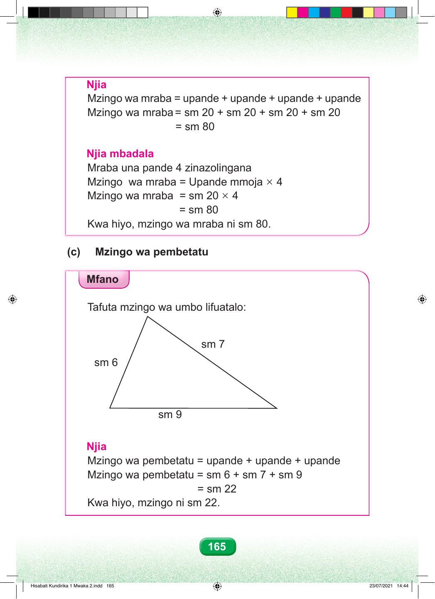

Njia. Mzingo wa mraba sawa sawa na upande jumlisha upande jumlisha upande jumlisha upande. Mzingo wa mraba sawa sawa na sentimita ishirini jumlisha sentimita ishirini jumlisha sentimita ishirini jumlisha sentimita ishirini. Sawa sawa na sentimita themanini. Njia mbadala Mraba una pande nne zinazolingana. Mzingo wa mraba sawa sawa na upande mmoja kuzidisha nne. Mzingo wa mraba sawa sawa na sentimita ishirini kuzidisha nne. Sawa sawa na sentimita themanini. Kwa hiyo, mzingo wa mraba ni sentimita themanini. Sehemu c. Mzingo wa pembetatu. Mfano Tafuta mzingo wa pembetatu ifuatayo. Mchoro ni pembetatu. Pande zake zina urefu wa sentimita sita, sentimita saba na sentimita tisa. Tumia urefu wa pande zote tatu. Anza na upande wa sentimita sita, kisha sentimita saba, kisha sentimita tisa. Njia Mzingo wa pembetatu sawa sawa na upande jumlisha upande jumlisha upande. Mzingo wa pembetatu sawa sawa na sentimita sita jumlisha sentimita saba jumlisha sentimita tisa. Sawa sawa na sentimita ishirini na mbili. Kwa hiyo, mzingo wa pembetatu ni sentimita ishirini na mbili. 165 Hisabati Kundirika 1 Mwaka 2.indd 165 23/07/2021 14:44